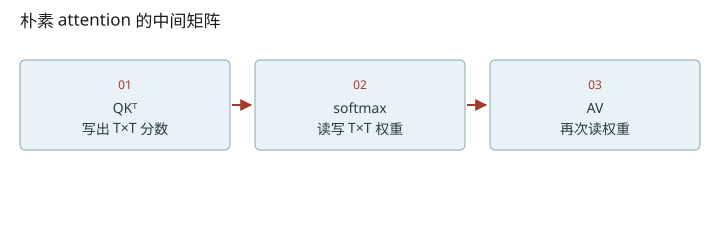
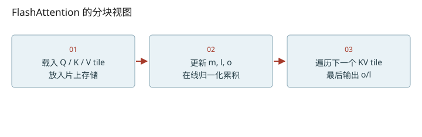

深入篇 22 / Transformer 逐步拆解 · 2026-11-08
FlashAttention：不存整张分数表，如何仍然精确
用在线 softmax 的三个累积量解释 tiling，区分省 IO 与减少数学运算。
用在线 softmax 的三个累积量解释 tiling，区分省 IO 与减少数学运算。

“精确”指同一数学 attention，不是逐位相同
FlashAttention 原论文将 attention 的性能问题放到 GPU 存储层级上：HBM 容量大但访问代价高，片上 SRAM 更快且容量小。分块重排计算，避免把完整 T×T 中间表反复写回显存。它不是用近似注意力跳过一部分 key；浮点归约顺序变化仍可能带来舍入差异。
一次合并两个 tile 的推导
对某一 query 行，已处理部分保存最大值 m、归一化分母 l=Σexp(s−m)、未归一化输出向量 o=Σexp(s−m)v。新 tile 自己得到 mᵦ、lᵦ、oᵦ，要把两份量变到相同基准。
α = exp(m−m′)，β = exp(mᵦ−m′)
l′ = αl + βlᵦ
o′ = αo + βoᵦ
全部 tile 处理后 output = o′ / l′
关键是最大值改变时，旧累积量也要缩放；不能把每块各自 softmax 的输出直接平均。第一次 tile 可以直接初始化 m/l/o；若从空状态实现，需正确处理 −∞ 和零分母。
用一个标量例子验证
两块分数分别 [0]、[ln2]，V分别 [1]、[3]。旧 m=0,l=1,o=1；新 mᵦ=ln2,lᵦ=1,oᵦ=3。共同基准为ln2，所以 α=1/2、β=1。合并 l′=1.5，o′=3.5，输出=7/3。这与完整 softmax 权重 [1/3,2/3] 得到的结果一致。
FlashAttention 与 PagedAttention 不是互斥选项
前者主要处理 attention 的 IO 与计算组织，后者处理 KV 的块式分配/寻址；系统可以同时具备两者。本地 nano-vllm prefill 使用 varlen 接口，decode 使用 with_kvcache 接口，并由 block_table 描述物理布局。不要把“用了 FlashAttention”理解为已经解决调度、缓存生命周期或请求排队。

数值练习：先算，再核对
按上式合并 [0] 与 [ln2] 两块。然后运行 python labs/transformer_lab.py online，查看数值合并与完整 softmax 的误差。解释为何一个4096×4096的单头 BF16 分数矩阵需要32 MiB，而实际累积通常还有额外精度要求。
闭卷检索
不要回看正文。答错后先解释原因，再重新打开这一课。
把结论落到源码
- 在 Attention.forward 对照 prefill/decode 两个 flash_attn 调用的输入参数。
- 把 block_table 标在存储寻址层，把 tile 标在 kernel 计算层，解释二者如何协作。
以下行号由本地 vendor 文件生成；上游链接固定完整 commit，离线摘录可直接打开。
- nano-attention：nanovllm/layers/attention.py L43–75 · 上游证据
- nano-store-kv：nanovllm/layers/attention.py L11–40 · 上游证据
优先阅读：FlashAttention §3，Algorithm 1。
速查：形状与公式 · 三框架映射 · 术语表 · 复习与实战路线 · 4070 Ti本地实验
只在当前浏览器保存自评；不会自动写成已掌握的 learning record。